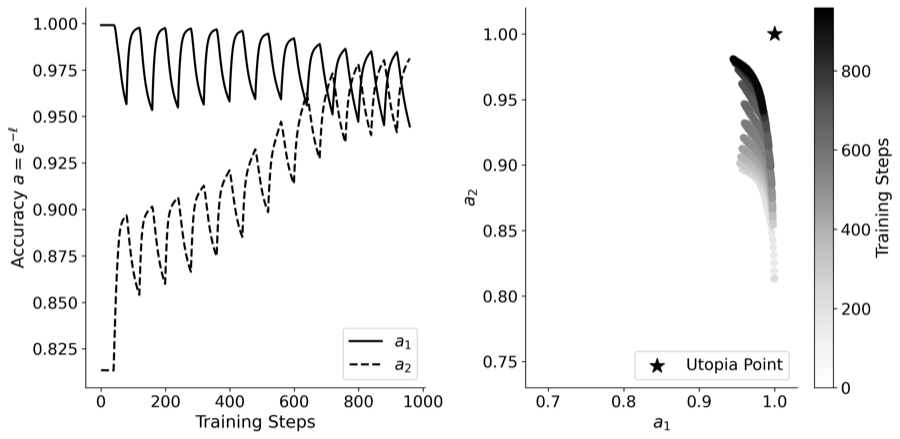

Dimensionless Controls of Plasticity in Continual Learning
Skriloff, O. (2026). Dimensionless Controls of Plasticity Under Alternating Tasks: From Evolutionary Biology to Continual Learning. Proceedings of Machine Learning Research, 334(2), 87–107. https://proceedings.mlr.press/v334/skriloff26a.html

This project asks which biological controls of plasticity survive the translation from evolution to gradient descent. By training a network alternately on two label sets, four factors proposed in evolutionary biology are recast as quantities of training dynamics, and the system reduces to two dimensionless controls: the disagreement between tasks and the reach, the product of learning rate and switching period. We derive bounds showing that disagreement alone sets a floor on achievable performance, while both together bound forgetting. Across 9,720 training runs, the neutral set size central to the biological picture proves negligible, leaving a solvable toy model of continual learning with scaling laws and a heuristic for tuning.